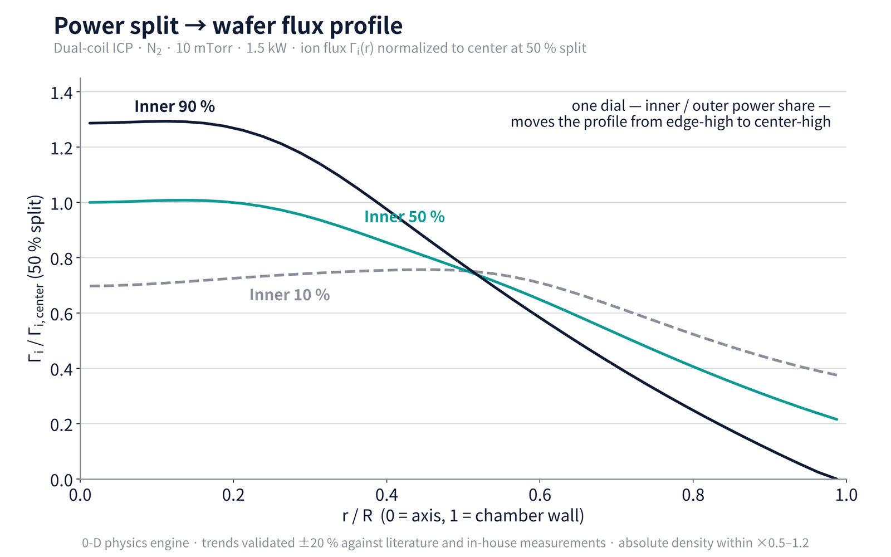
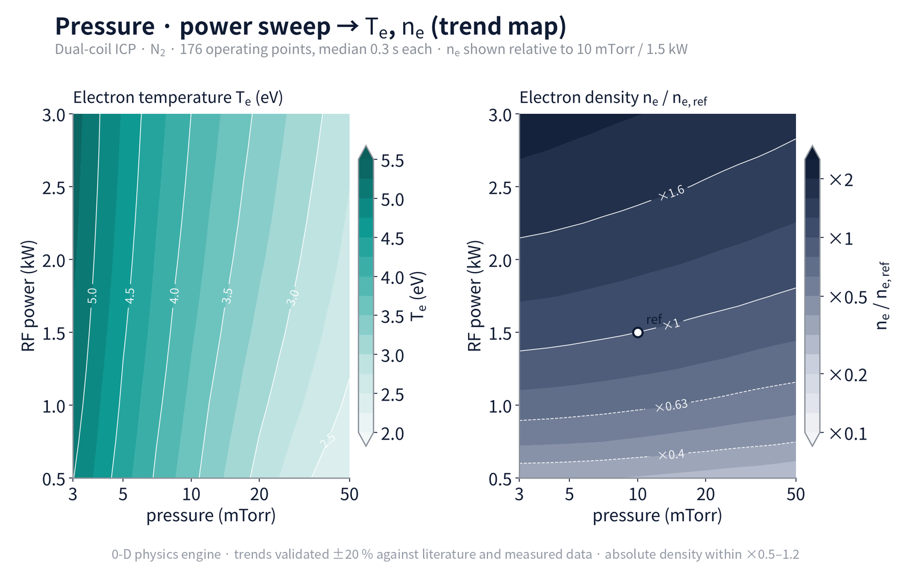
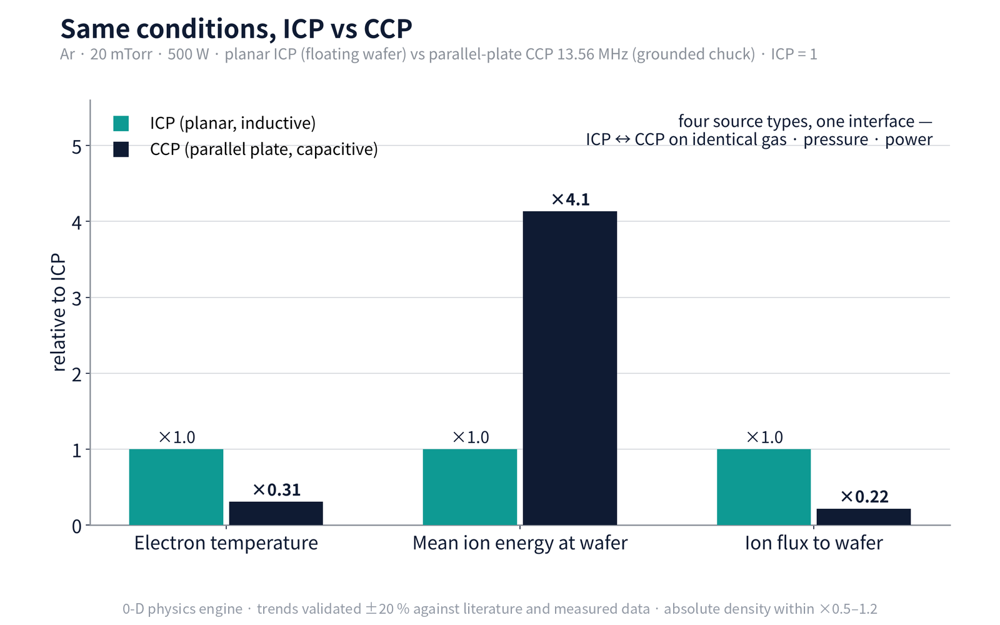
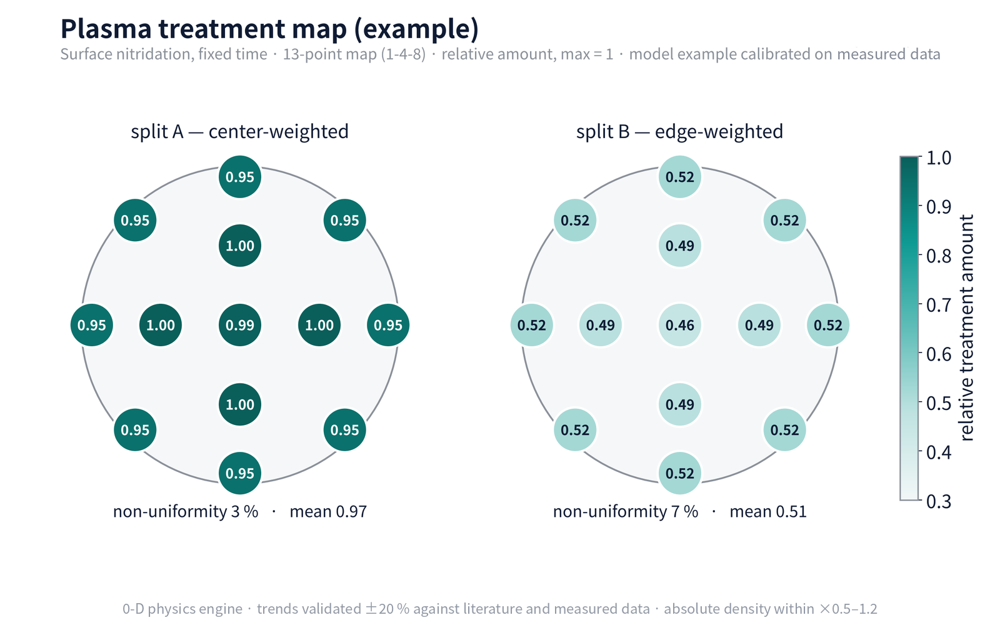

Four results from the Plasma Agent 0-D physics engine, two screen recordings and the new RF matching module. All on a generic design, normalized; trends validated ±20 % against literature and measured data, absolute density within ×0.5–1.2.
Screen recording — mixed Ar/N₂/H₂: change the split and the gas ratio, and the profile, ions and radicals followMixed Ar/N₂/H₂ discharge on a planar dual-coil ICP, 20 mTorr, 1.5 kW — changing the inner/outer power split (10 → 50 → 90 %) reshapes the radial profile; changing the gas ratio updates Tₑ, nₑ, ion composition and radical densities (N₂(v), N, H) in ~0.3 s. 25 s, silent. Geometry and coefficient panels are masked.

F-1 · Power split → wafer flux profileDual-coil ICP, N₂ 10 mTorr, 1.5 kW. One dial — the inner share at 10/50/90 % — moves the profile from edge-high to center-high. Normalized to the 50 % center value. The basis for design screening and purchase specs.

F-2 · Pressure · power sweep → Te, nₑ trend map176 operating points at 0.3 s each. Electron temperature in absolute terms (validated ±0.3 eV); density relative to the 10 mTorr / 1.5 kW reference. This is what "previewing the process window" means.

F-3 · Same conditions, ICP vs CCPAr 20 mTorr, 500 W. Parallel-plate CCP at 13.56 MHz relative to planar ICP (= 1): electron temperature ×0.31, mean ion energy at the wafer ×4.1, ion flux to the wafer ×0.22. Four source types share one interface, so the comparison is direct. CCP Te is the effective temperature of a two-temperature model.

F-4 · Plasma treatment map (example)Process Models — relative treatment amount on a 13-point (1-4-8) map for split A (center-weighted) and B (edge-weighted), max = 1. Non-uniformity 3 % vs 7 %. A model example calibrated on measured data; absolute concentration and time are not shown.
NEW IN v3.10 · RF MATCHING
From the plasma to the matcher spec
The same plasma calculation now gives the matcher-output impedance over the whole operating window, the matching window on a Smith chart, a wiring guide and a matcher specification — capacitor ranges, ratings, heat and efficiency — stated as ranges with their error bands. Power split between coils and matcher loss feed back into the plasma until they agree.
Screen recording — pressure → current split → matching window → wiring guidePlanar dual-coil ICP, N₂. Changing pressure updates the predictions and their proposal error bands; changing the inner/outer current ratio re-solves the splitter; the matching window covers 17 operating points; the last scene draws the wiring guide and the dedicated matcher spec. 25 s at 1.5× speed, silent. Model details and assumed circuit values are masked.
Basis: blind comparison with real cylindrical tools, no tool-specific tuning — coil current ±2–5 %, matcher-output impedance ±11 % (some configurations).
Where it stands
verifiedCylindrical solenoid · dual-coil
on real tools
baseline readyPlanar · CCP matcher specs
confirmed by first test
Not computed: reflected power (a perfect match is assumed) and bias (chuck) matchers. New tools are predicted and recorded before measurement, then compared when data arrive.